New Zealand
21 restaurants · 345 photos
NZ/AU Cock & BullHamilton, Waikato · 62NZ/AU
Cock & BullHamilton, Waikato · 62NZ/AU
Cock & BullHamilton, Waikato · 62NZ/AU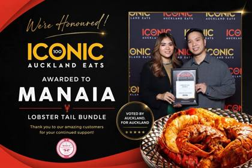
Manaia Seafood BoilOnehunga · 59NZ/AU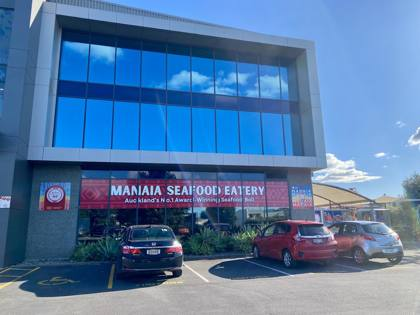
Manaia Seafood EateryPenrose, Auckland · 43NZ/AU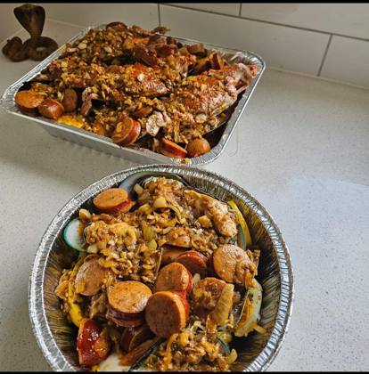
Southmade Seafood BoilsMāngere · 19NZ/AU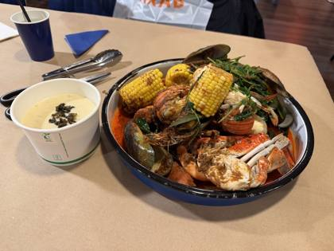
The KrabRotorua · 18NZ/AU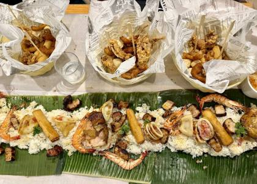
Fiesta in the CapitalTe Aro, Wellington · 17NZ/AU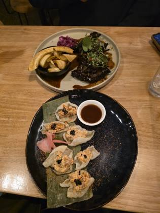
SALTWATER (Mount Maunganui)Mount Maunganui · 17NZ/AU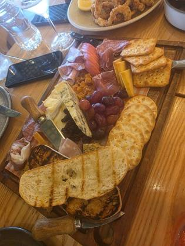
Botany CommonsEast Tamaki, Auckland · 14NZ/AU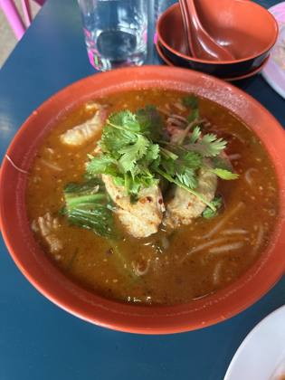
Rak Khun Thai Eatery & BarTakanini, Auckland · 14NZ/AU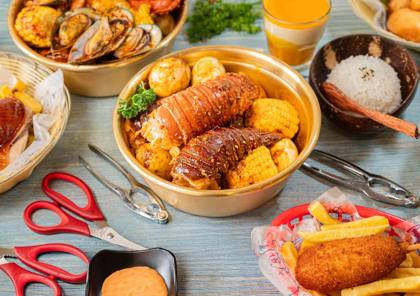
Cajun MamaWellington · 13NZ/AU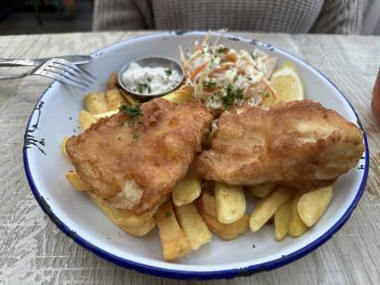
The Crab ShackQueens Wharf, Wellington · 12NZ/AU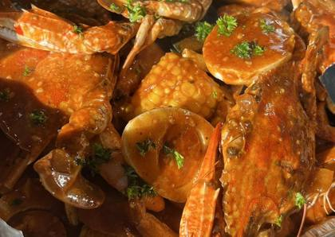
The Boil WellingtonPorirua · 9NZ/AU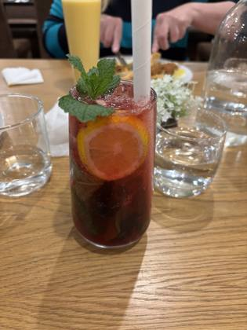
Mr. & Mrs. Chefs PalmyPalmerston North · 8NZ/AU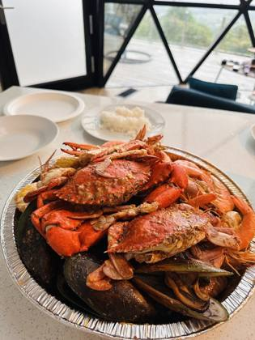
Havoc Seafood BoilGlendene, Auckland · 7NZ/AU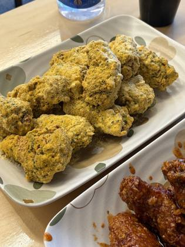
KCB Boiling SeafoodAlbany, Auckland · 7NZ/AU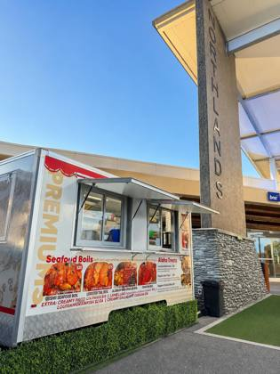
Kingdom KaiPapanui, Christchurch · 6NZ/AU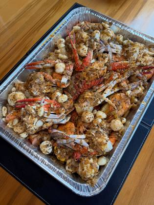
Janina's Seafood BoilMāngere East, Auckland · 5NZ/AU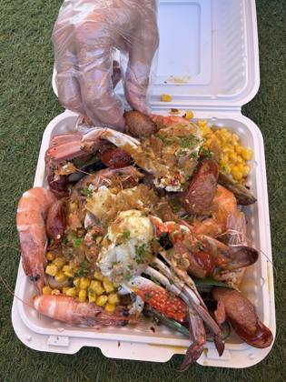
Cene's Seafood Boil (Whanau Food Bar)Manurewa, Auckland · 5NZ/AU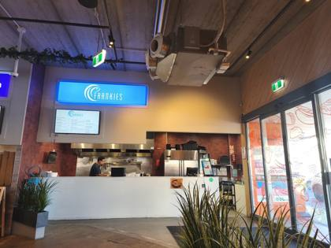
Frankies (Broadway FoodCo)Papakura, Auckland · 4NZ/AU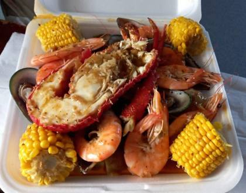
Crystal's Seafood BoilEast Tāmaki, Auckland · 3NZ/AU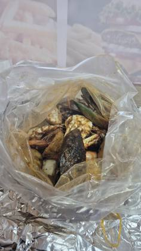
Lucky Nemo KilbirnieKilbirnie, Wellington · 3Every boil listing found · 20
Google Maps listings whose name says boil / crawfish / Cajun / crab etc. Swept 20 Oct 2026. Not all verified as bag boils; tap to open the listing.
Auckland · 1
- Voodoo Seafood Boil Auckland · ★3.5 (2) · temporarily closed
Eastern Bay of Plenty · 1
- Boo's Bussin Boil's (food trailer; Rotorua pre-order pop-ups) Ōpōtiki / Whakatāne, Facebook/Instagram only
Glen Eden · 1
- Oooh Bud (seafood boil trays + catering, West Auckland) Glen Eden, Auckland, Facebook/Instagram only
Hamilton · 1
- Missy's Seafood Boil (pre-order trays) Hamilton, Facebook/Instagram only
Kelburn · 1
- Voodoo Lady Cajun BBQ & Grill Kelburn · ★5.0 (2)
Lower Hutt · 1
- Out the Gate Seafood Boil Naenae, Lower Hutt, Facebook/Instagram only
Mangere · 2
- Manaia Seafood Boil Mangere, 31 Hill St · ★4.4 (1,385)
- Southmade Seafood Boils 5024 to 275 Mangere, Opens 12 PM Wed · ★5.0 (1)
Manukau City · 1
- Crystal's Seafood Boil Limited Manukau City, 105/443 E Tamaki Rd · ★4.8 (80)
New Windsor · 1
- Kraken Seafood Boil (weekend pick-up trays; last public post Apr 2024) New Windsor, Auckland, 42 Bollard Ave (pick-up)
Papatoetoe · 1
- MamaBrookes SeafoodBoil (pre-order pick-up, Thu–Sun, since 9 Jul 2026) Papatoetoe, Auckland, Facebook/Instagram only
Pukehangi · 1
- Shellz Kai & Seafoodboils ("$40 seafood boils only", Pukehangi, Rotorua; last post Dec 2025) Pukehangi, Rotorua, Facebook only
Rosebank · 2
- Havoc Seafood Boil and Soul Food Rosebank, 9A Akatea Rd · ★4.5 (27) · temporarily closed
- Lady Naomi Seafood Boil Rosebank · ★3.7 (3) · temporarily closed
Rotorua · 4
- The Krab | Rotorua Rotorua, 209 Fenton St · ★4.4 (321)
- Boiling Over Boil's ("affordable seafood boils"; Rotorua, Facebook only, posts undated) Rotorua, Facebook only
- Aneta's Foils n Boils (fundraiser boil nights at Whakarewarewa Rugby club; $55 trays / $30 singles; last post Jun 2025) Rotorua, Facebook only
- Kai Moana seafood boils (Rotorua, Facebook only; Fri 3–6:30pm, Sat–Sun 10am–6:30pm; no dated posts) Rotorua, Facebook only
Tauranga · 2
- Wetini's Kai Tauranga Seafood Boils Tauranga, Facebook/Instagram only
- Mc-Cleod's Tucker seafood boils (Maungatapu, Tauranga; Facebook only; pre-order; last dated post Feb 2024) Tauranga, Maungatapu Road, Maungatapu (Facebook only)